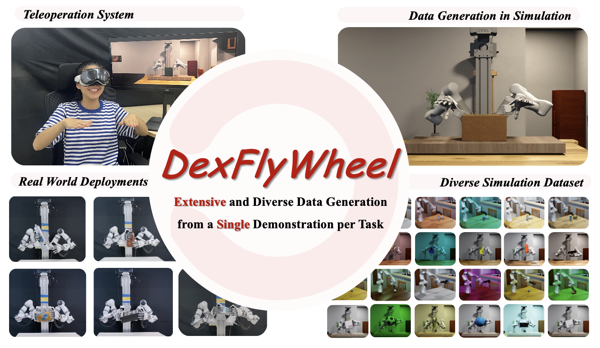
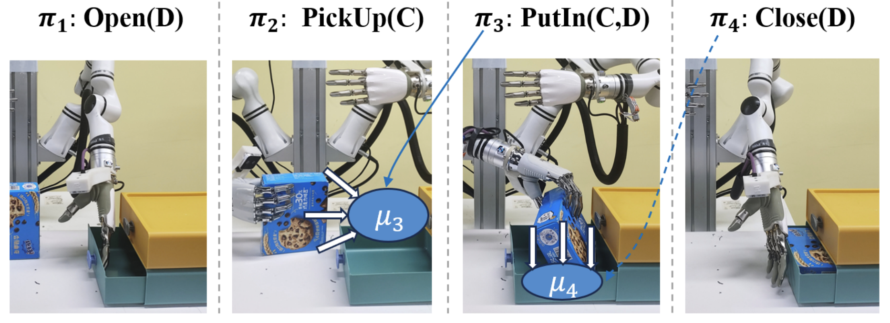
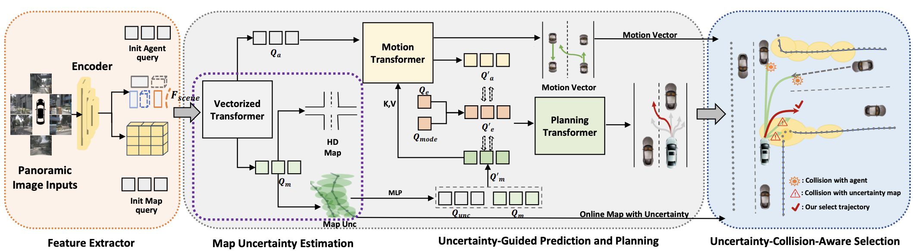
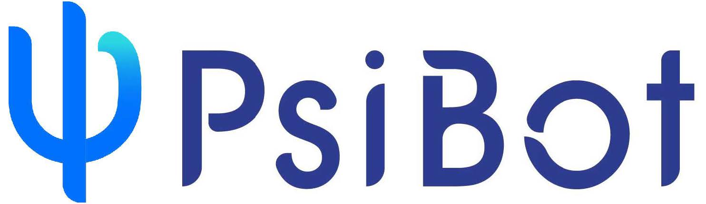
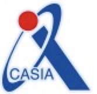

|
Kefei Zhu "I enjoy doing research with real-world impact, and I hope one day robots can step out of the lab and become true companions in our daily lives." I am a research intern at Peking University, advised by Prof. Hao Dong and Prof. Yaodong Yang (co-advisor). I am also a research intern at PsiBot. I work closely with Yuanpei Chen (named to Forbes 30 Under 30 Asia 2025 list in AI) and Xiaoqi Li. I received my Master of Engineering degree from Beijing University of Posts and Telecommunications in 2024. My research focuses on robot learning and dexterous manipulation. I am particularly passionate about finding data scaling laws in robotics and developing lifelong robot learning systems. My long-term vision is to collaborate with a global community of researchers to pioneer advanced robot learning systems, ultimately enabling robots to generalize across diverse real-world scenarios. Email / CV / Google Scholar / WeChat / |

|
{kind=link}
ResearchI'm interested in robot learning, dexterous manipulation, and lifelong learning systems. Most of my research focuses on finding data scaling laws in robotics and developing systems that can generalize across diverse real-world scenarios. |
|  |
DexFlyWheel: A Scalable and Self-improving Data Generation Framework for Dexterous Manipulation
Kefei Zhu, Fengshuo Bai, YuanHao Xiang, Yishuai Cai, Xinglin Chen, Ruochong Li, Xingtao Wang, Yaodong Yang, Hao Dong, Xiaopeng Fan, Yuanpei Chen NeurIPS, 2025 Spotlight (~3.2%) project page / arXiv / featured in Heart of the Machine Media A self-improving framework that efficiently generates diverse, high-quality dexterous manipulation data, enabling robots to learn complex tasks through iterative data generation |
|  |
ToS: Tree-of-Skill Reinforcement Learning driven by Behavior Tree for Long-horizon Manipulation
Xinglin Chen, Yishuai Cai, Minglong Li, Wenjing Yang, Kefei Zhu, Fengshuo Bai, Yaodong Yang, Yuanpei Chen AAAI, 2025, in submission A novel reinforcement learning framework that combines behavior trees with skill-based learning for complex long-horizon manipulation tasks. |
|  |
UncAD: Towards Safe End-to-end Autonomous Driving via Online Map Uncertainty
Pengxuan Yang, Yupeng Zheng, Qichao Zhang, Kefei Zhu, Zebin Xing, Qiao Lin, Yun-Fu Liu, Zhiguo Su, Dongbin Zhao ICRA, 2025, Accepted project page / arXiv A novel approach to safe end-to-end autonomous driving by incorporating online map uncertainty estimation to improve decision-making robustness. |

|
StyleFollower: A Two-Stage Car-Following Model for Enhanced Driving Style Diversity and Controllability
Kefei Zhu, Qichao Zhang IEEE Transactions on Vehicular Technology, Major Revision A two-stage car-following model that enhances driving style diversity and controllability through innovative modeling approaches for autonomous vehicle behavior. |
Research Experience |
|
Research Visitor, Peking University
Sep 2024 - Present
Advised by Prof. Hao Dong with Robotics Manipulation project. |
|
|  |
Research Intern, PsiBot
Sep 2024 - Present
Working on dexterous manipulation and general robot learning systems. |
|  |
Research Visitor, Institute of Automation, Chinese Academy of Sciences
Sep 2023 - Aug 2024
Advised by Prof. Dongbin Zhao and Prof. Qichao Zhang with Human-like and Safe Autonomous Driving project. |
Academic Services |
| Reviewer, IEEE International Conference on Robotics and Automation (ICRA) 2025 |
Education |
|
Beijing University of Posts and Telecommunications
2021 - 2024
Master's Degree (top 3%) |
|
China Jiliang University
2017 - 2021
Bachelor's Degree (top 3%) |
Honors & Awards |
| Beijing University of Posts and Telecommunications Graduate First-Class Scholarship (3 times) (30%) 2021-2024 |
| Outstanding undergraduate graduates of Zhejiang Province (3%) 2021 |
| Zhejiang Provincial Government Scholarship (5%) 2020 |
| First Prize in Advanced Mathematics and Calculus Competition 2020 |
| CJLU Undergraduate Second-Class Scholarship (3 times) (5%); Third-Class Scholarship (2 times) (20%); Research and Innovation Scholarship 2017-2021 |
|
Template stolen from Jon Barron. Thanks for stopping by :) |